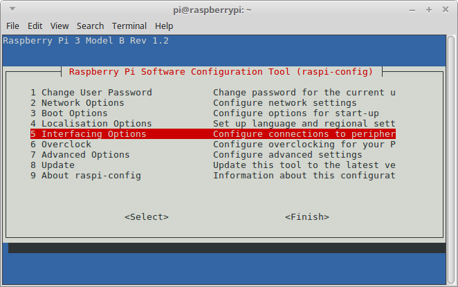
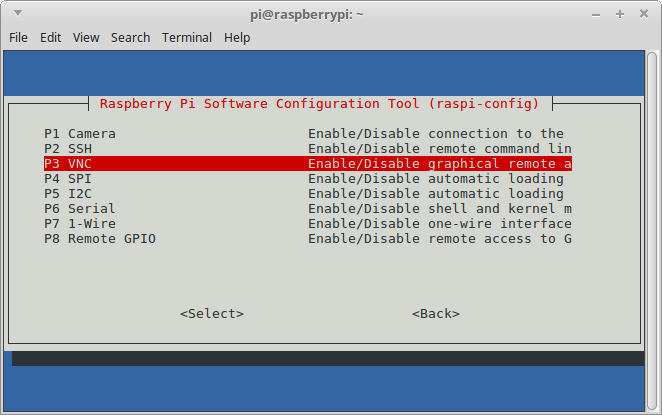
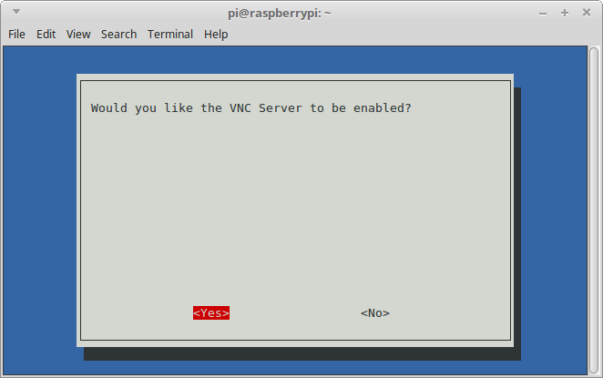
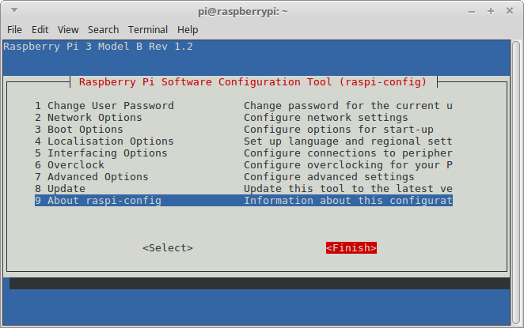
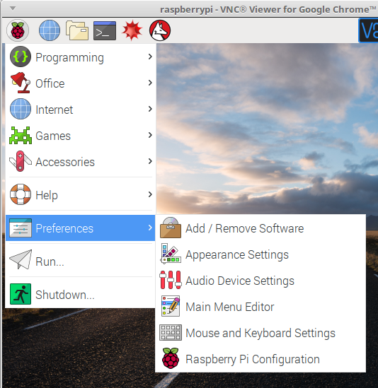
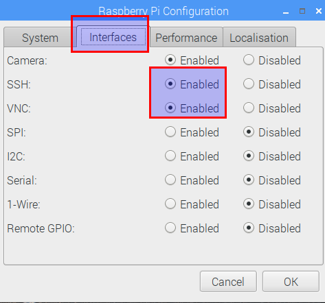

8.1 VNC Server
VNC server está instalado de forma nativa en Raspbian, pero NO ESTA ACTIVO POR DEFECTO, hay que activarlo:
8.1.1 Activarlo via SSH
Teclear
sudo raspi-config
Sale esta pantalla, entra en la opción 5 :

Y entramos en VNC utilizando las flechas del teclado y tecla Intro:

Y le decimos que YES

Finish

Pedirá reiniciar, le decimos que sí
8.1.2 Activarlo con pantalla...
Entramos en Preferencias- RaspberryPi configuration

Y en Interfaces lo activamos, de paso activa SSH


Raspberry muy básico por Javier Quintana Peiró bajo licencia Creative Commons Reconocimiento-NoComercial-CompartirIgual 4.0 Internacional License.